Tomcat
Tomcat
9.Tomcat安全
9.1配置安全【运维人员】
删除webapps目录下的所有文件，禁用tomcat管理界面
注释或删除tomcat-users.xml文件内的所有用户权限
更改关闭tomcat指令或禁用
Tomcat的server.xml中定义了可以直接关闭Tomcat实例的管理端口(默认8005)
由于默认关闭Tomcat 的端口和指令都很简单。默认端口为8005 ,指令为SHUTDOWN。
可以通过telnet连接上该端口之后，输入SHUTDOWN (此为默认关闭指令)即可关闭Tomcat 实例（注意,此时虽然实例关闭了,但是进程还是存在的）
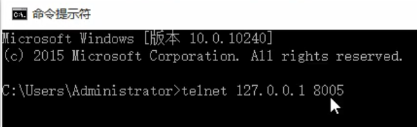
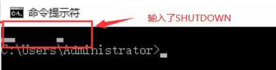
方案一：更改端口号和指令
1
<Server port="8456" shutdown="server_shut">
- 方案二：禁用8005端口
1
<Server port="-1" shutdown="SHUTDOWN">
定义错误页面
- 在webapps/ROOT目录下错误页面404.html，500.html
9.2应用安全
- 在大部分的web应用中，特别是一些后台应用系统，都会实现自己的安全管理模块(权限模块) , 用于控制应用系统的安全访问。
- 基本包含两个部分：认证(登录/单点登录)和授权(功能权限、数据权限)两个部分
- 对于当前的业务系统,可以自己做一套适用于自己业务系统的权限模块，也有很多的应用系统直接使用一些功能完善的安全框架 ,将其集成到我们的web应用中,如: SpringSecurity. Apache Shiro等。
9.3传输安全
9.3.1 HTTPS介绍
Https的全称是超文本传输安全协议( Hypertext Transfer Protocol Secure) , 是一种网络安全传输协议。在HTTP的基础上加入SSL/TLS来进行数据加密，保护交换数据不被泄露、窃取。
SSL和TLS是用于网络通信安全的加密协议,它允许客户端和服务器之间通过安全链接通信。ssL协议的3个特性:
- 保密 :通过ssL链接传输的数据时加密的。
- 鉴别:通信双方的身份鉴别,通常是可选的,单至少有一方需要验证。
- 完整性:传输数据的完整性检查。
从性能角度考虑,加解密是一项计算昂贵的处理,因为尽量不要将整个web应用采用SSL链接，实际部署过程中，选择有必要进行安全加密的页面(存在敏感信息传输的页面)采用SSL通信。
HTTPs和HTTP的区别
- HTTPs协议需要到证书颁发机构cA申请ssL证书，然后与域名进行绑定, HTTP不用申请证书;
- HTTP是超文本传输协议,属于应用层信息传输, HTTPS则是具有ss加密传安全性传输协议,对数据的传输进行加密,相当于HTTP的升级版;
- HTTp和HTTps使用的是完全不同的连接方式 ,用的端口也不一-样 ,前者是8080,后者是8443。
- HTTP的连接很简单 。是无状态的; HTTPs协议是由SSL+HTTP协议构建的可进行加密传输、身份认证的网络协议,比HTTp协议安全
HTTPs协议优势:
- 提高网站排名。有利于搜索引擎优化(SEO)。谷歌已经公开声明两个网站在搜索结果方面相同。如果一个网站启用了 ssL。它可能会获得略高于没有ssL网站的等级，而且百度也表明对安装了ssI的网站表示友好。因此,网站上的内容中启用ssI都有明显的sEo优势。
- 隐私信息加密,防止流量劫持。特别是涉及到隐私信息的网站,互联网大型的数据泄露的事件频发发生,网站进行信息加密势在必行。
- 浏览器受信任。自从各大主流浏览器大力支持Https协议之后 ,访问Http的网站都会提示”不安全”的警告信息。
9.3.2.Tomcat支持HTTPs
不向CA进行申请，构建Https
- 生成秘钥库文件
1
keytool -genkey -alias tomcat -keyalg RSA -Keystore tomcatkey.keystose
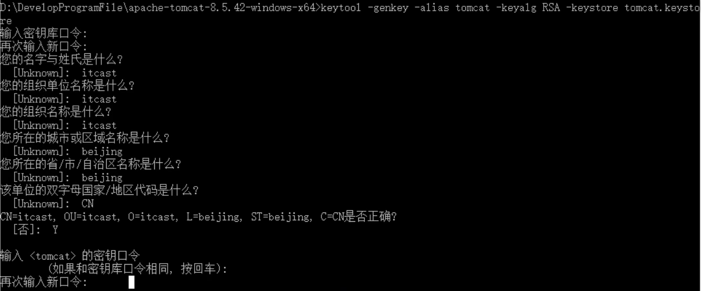
输入对应的密钥库密码，秘钥密码等信息之后 .会在当前文件夹中出现一个秘钥库文件: tomcatkey.keystore
将秘钥库文件tomcatkey . keystore复制到tomcat/conf目录下
配置tomcat/conf/server.xml
1
2
3
4
5<Connector port="8443" protocol="org.apache.coyote.http11. Http11NioProtocol" maxThreads="150" schema="https" secure="true" SSLEnabled="true">
<SSLHostConfig certificateVerification="false">
<Certificate certificateKeystoreFile="[...]/conf/tomcatkey. keystore" certificateKeystorePassword="itcast" type="RSA"/>
</SSLHostConfig>
</Connector>结果
10.Tomcat 性能调优
10.1. Tomcat 性能测试
- 对于系统性能,用户最直观的感受就是系统的加载和操作时间，即用户执行某项操作的耗时。
- 从更为专业的角度上讲,性能测试可以从以下两个指标量化。
- 响应时间：为执行某个操作的耗时。大多数情况下,我们需要针对同一一个操作测试多次，以获取操作的平均响应时间
- 吞吐量:即在给定的时间内，系统支持的事务数量，一秒内可以处理多少请求，计算单位为TPS。
- 通常情况下,我们需要借助于一些自动化工具来进行性能测试，因为手动模拟大量用户的并发访问几乎是不可行的。而且现在市面上也有很多的性能测试工具可以使用,如: ApacheBench，ApacheJMeter， WCAT、 WebPolygraph、 LoadRunner
10.1.1 ApacheBench
ApacheBench (ab)是一款Apacheserver基准的测试工具 ，用户测试Apache server的服务能力(每秒处理请求数) ,它不仅可以用户Apache的测试,还可以用于测试Tomcat、Nginx、 lighthttp、 IIS等服务器
安装
1 | yum install httpd-tools |
- 部署Tomcat
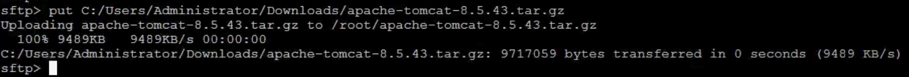
- 上传War，删除原始项目
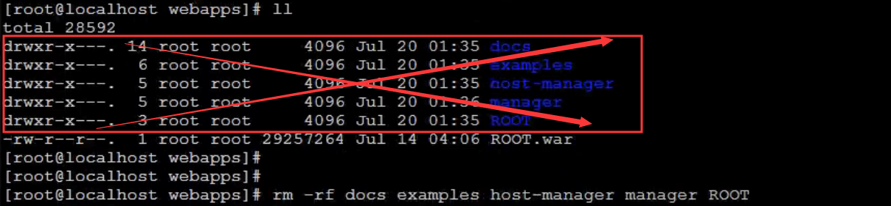
- 数据库环境准备
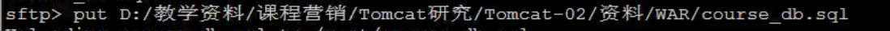
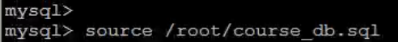
- 启动Tomcat
- 性能测试
1 | ab -n 1000 -c 100 -p data.json -T application/json http:// localhost:9000/course/search.do?page=1spageSize=10 |
| 参数 | 含义描述 |
|---|---|
| -n | 在测试会话中所执行的请求个数,默认只执行一次请求 |
| -c | 一次产生的请求个数， 默认一次一个 |
| -p | 包含了需要POST的数据文件 |
| -t | 测试所进行的最大秒数,默认没有时间限制 |
| -T | POST数据所需要使用的Content-Type头信息 |
| -v | 设置显示信息的详细程度 |
| -w | 以HTML表的格式输出结果,默认是白色背景的两列宽度的一张表 |
- 结果说明
| 指标 | |
|---|---|
| Server Software | 服务器软件 |
| Server Hostname | 主机名 |
| Server Port | 端口号 |
| Document Path | 测试的页面 |
| Document Length | 测试的页面大小 |
| Concurrency Level | 并发数 |
| Time taken for tests | 整个测试持续的时间 |
| Complete requests | 完成的请求数量 |
| Failed requests | 失败的请求数量,这里的失败是指请求的连接服务器、发送数据、接收数据等环节发生异 |
| Write errors | 输出错误数量 |
| Total transferred | 整个场景中的网络传输量,表示所有请求的响应数据长度总和,包括每个http响应数据的头信息和正文数据的长度 |
| THL transferred | 整个场景中的HTML内容传输最，表示所有请求的响应数据中正文数据的总和 |
| Requests per second | 每秒钟平均处理的请求数(相当于LR中的每秒事务数)这便是我们重点关注的吞吐率 ==Complete requests / Time taken for tests |
| Time per request | 每个线程处理请求平均消耗时间(相当于LR中的平均事务响应时间)用户平均请求等待时间 |
| Transfer rate | 平均每秒网络上的流量 |
| Percentage of the requeste served within a certain time (ms) | 指定时间里，执行的请求百分比 |
| 参数 | 指标说明 |
|---|---|
| Requests per second | 吞吐率：服务器并发处理能力的量化描述,单位是reqs/s。指的是在某个并发用户数下单位时间内处理的请求数，某个并发用户数下单位时间内能处理的最大请求数。称之为最大吞吐率。这个数值表示当前机器的整体性能,值越大越好 |
| Time per request | 用户平均请求等待时间：从用户角度看，完成一个请求所需要的时间 |
| Time per request | 服务器平均请求等待时间服务器完成一个请求的时间 |
| Concurrency Level | 并发用户数 |
10.2. JVM参数调优
- Tomcat是一款Java应用，那么JVM的配置便与其运行性能密切相关
- JVM优化的重点集中在内存分配和GC策略的调整上
- 内存会直接影响服务的运行效率和吞吐量
- JVM垃圾回收机制则会不同程度地导致程序运行中断，调整JVM垃圾回收策略，可以极大减少垃圾回收次数，提升垃圾回收效率，改善程序运行性能
| -server | 启动Server，以服务端模式运行 | 服务端模式建议 开启 |
| -Xms | 最小堆内存 | 建议与-Xmx设置相同 |
| -Xmx | 最大堆内存 | 建议设置为可用内存(排除系统和其他服务)的80% |
| -XX:MetaspaceSize | 元空间初始值 | |
| -XX:MaxMetaspaceSize | 元空间最大内存 | 默认无限 |
| -XX:MaxNewSize | 新生代最大内存 | 默认16M |
| -XX:NewRatio | 年轻代和老年代大小比值，取值为整数，默认为2 | 不建议修改 |
| -XX:SurvivorRatio | Eden区与Survivor区大小的比值，取值为整数，默认为8 | 不建议修改 |
- 修改catalina.sh
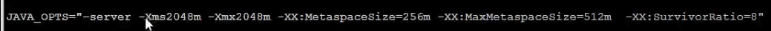
- 查看Tomcat内存占用情况
1 | jmap -heap [Tomcat pid] |
10.3.JVMGC策略
JVM垃圾回收性能有以下两个主要的指标
- 吞吐量:工作时间(排除GC时间)占总时间的百分比，工作时间并不仅是程序运行的时间 ,还包含内存分配时间。
- 暂停时间:测试时间段内，由垃圾回收导致的应用程序停止响应次数/时间
查看Tomcat默认垃圾回收器
在bin/catalina.sh的配置中，加入如下配置
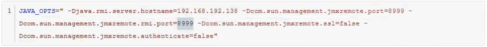
打开jconsole
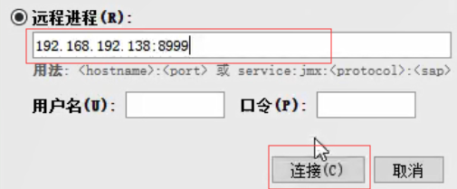
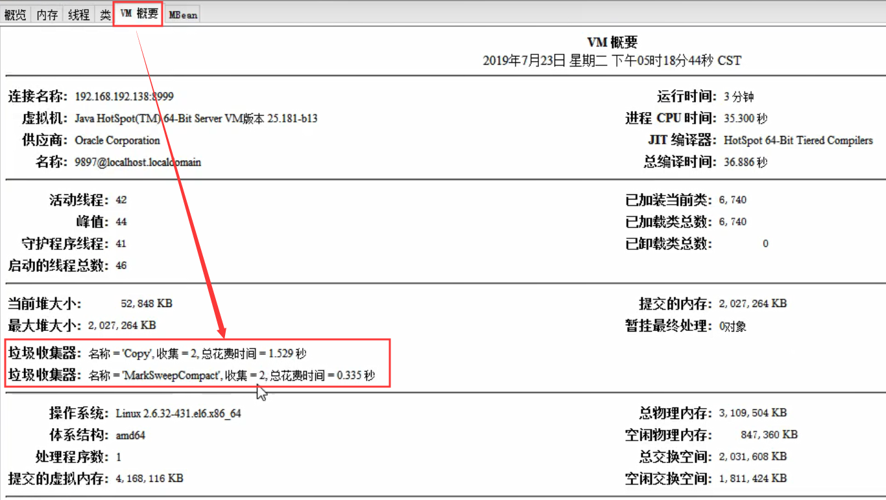
- 上面新生代垃圾收集器，下面老年代垃圾收集器
修改catalina.sh
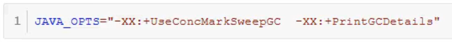
10.4.Tomcat配置调优
- 调整tomcat/conf/server.xml中关干链接器的配置可以提升应用服务器的性能
| 参数 | 说明 |
|---|---|
| maxConnections | 最大连接数，当到达该值后，服务器接收但不会处理更多的请求，额外的请求将会阻塞直到连接数低于maxConnections。可通过ulimit -a查看服务器限制。对于cpu要求更高(计算型)时,建议不要配置过大；对于CPU要求不是特别高时，建议配置在2000左右(受服务器性能影响)。当然这个需 要服务器硬件的支持 |
| maxThreads | 最大线程数，需要根据服务器的硬件情况，进行一个合理的设置 |
| acceptCount | 最大排队等待数，当服务器接收的请求数量到达maxConnections , 此时Tomcat会将后面的请求,存放在任务队列中进行排序，acceptCount指的就是任务队列中排队等待的请求数 。一台Tomcat的最大的请求处理数量是maxConnections+acceptCount |
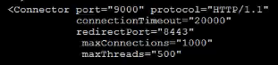
11.Tomcat附加功能
11.1.WebSocket
websocket是HTML5新增的协议,它的目的是在浏览器和服务器之间建立一个不受限的双向通信的通道，比如说，服务器可以在任意时刻发送消息给浏览器。
为什么传统的HTTP协议不能做到websocket实现的功能?
- 这是因为HTTp协议是一个请求-响应协议，请求必须先由浏览器发给服务器，服务器才能响应这个请求,再把数据发送给浏览器。换句话说，浏览器不主动请求,服务器是没法主动发数据给浏览器的。
- 这样一来,要在浏览器中搞一个实时聊天,或者在线多人游戏的话就没法实现了,只能借助Flash这些插件。
- HTTP协议其实也能实现啊,比如用轮询或者comet。
- 轮询是指浏览器通过JavaScript启动一个定时器，然后以固定的间隔给服务器发请求,询问服务器有没有新消息。这个机制的缺点一是实时性不够,二是频繁的请求会给服务器带来极大的压力。
- Comet本质上也是轮询,但是在没有消息的情况下,服务器先拖一段时间,等到有消息了再回复。这个机制暂时地解决了实时性问题,但是它带来了新的问题:以多线程模式运行的服务器会让大部分线程大部分时间都处于挂起状态,极大地浪费服务器资源。另外,一个HTTP连接在长时间没有数据传输的情况下,链路上的任何一一个网关都可能关闭这个连接,而网关是我们不可控的,这就要求Comet连接必须定期发一些ping数据表示连接“正常工作”。
以上两种机制都治标不治本。所以，HTML5推出了Websocket标准,让浏览器和服务器之间可以建立无限制的全双工通信，任何一方都可以主动发消息给对方。
WebSocket并不是全新的协议,而是利用了HTTP协议来建立连接。
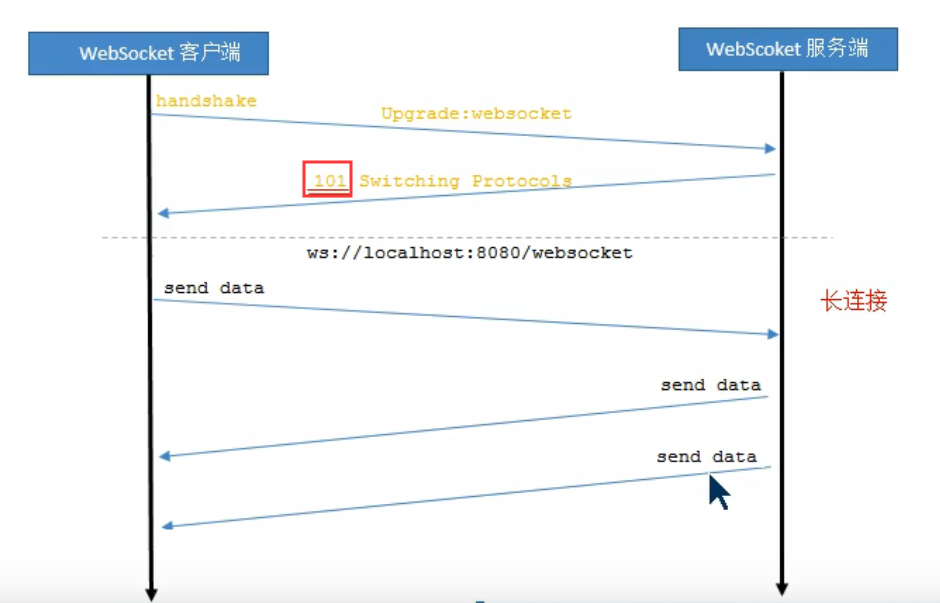
首先, Websocket连接必须由浏览器发起,因为请求协议是一个标准的HTTp请求 ,格式如下
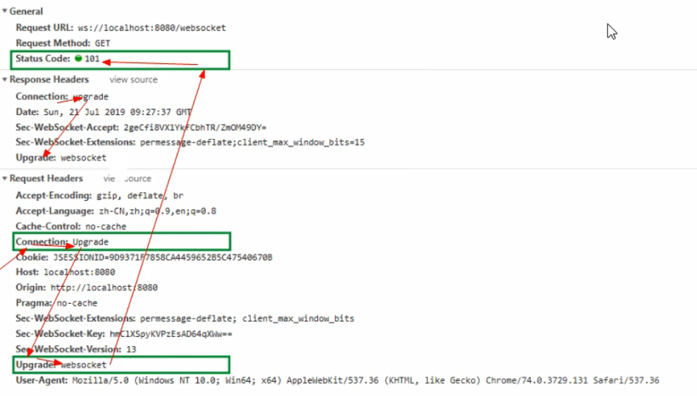
WebSocket请求和普通的HTTP请求有几点不同
- GET请求的地址不是类似http:// ,而是以ws://开头的地址
- 请求头Connection: Upgrade和请求头Upgrade: websocket表示这个连接将要被转换为Websocket连接
- Sec-Websocket-Key是用于标识这个连接，是一个BASE64编码的密文，要求服务端响应一个对应加密的Sec-WebSocket-Accept头信息作为应答
- Sec-WebSocket-Version 指定了Websocket的协议版本;
- 101状态码表明服务端已经识别并切换为websocket协议
- Sec-Websocket-Accept是服务端与客户端致的秘钥计算出来的信息
11.2Tomcat的Websocket
Tomcat的7.0.5版本开始支持Websocket, 并且实现了Java Websocket规范(JSR356)，而在7.0.5版本之前(7.0.2之后)则采用自义API，即webSocketServlet实现。
Java WebSocket应用由一系列的WebSocketEndpoint组成。Endpoint 是一个java对象，代表WebSocket链接的一端,对于服务端,我们可以视为处理具体Websocket消息的接口，就像servlet之与http请求一样
我们可以通过两种方式定义Endpoint
- 第一种是编程式，即继承类javax.websocket.Endpoint并实现其方法
- 第二种是注解式，即定义一-个POJO,并添加@ServerEndpoint相关注解
Endpoint实例在WebSocket握手时创建，并在客户端与服务端链接过程中有效,最后在链接关闭时结束。在Endpoint接口中明确定义了与其生命周期相关的方法，规范实现者确保生命周期的各个阶段调用实例的相关方法。生命周期方法如下:
方法 含义描述 注解 onOpen 当开启一个新的会话时调用，该访法是客户端与服务端握手成功后调用的方法 @OnOpen onClose 当会话关闭时调用 @OnClose onError 当连接过程中异常时调用 @OnError 通过为Session添加MessageHandler消息处理器来接收消息，当采用注解方式定义Endpoint时，我们还可以通过@onMessage注解指定接收消息的方法。发送消息则由RemoteEndpoint完成，其实例由Session维护，根据使用情况，我们可以通过session. getBasicRemote获取同步消息发送的实例，然后调用其sendXxx()方法就可以发送消息，可以通过session. getAsyncRemote获取异步消息发送实例。
11.3.WebSocket Demo
- 实现简易网络聊天室
11.3.1.实现流程
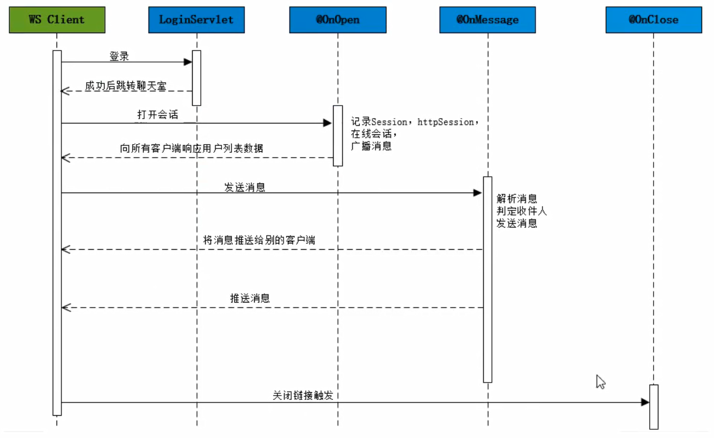
11.3.2. 数据格式
客户端–>服务端
1
{"fromName":"Deng","toName":"HEIMA","content":"约会呀"}
服务端–>客户端:
- 如果type为user， 则说明返回的是用户列表
1
{"data":"HEIMA,Deng,ITCAST","toName":"","fromName":”","type": "user"}
- 如果type为message ，则说明返回的是消息内容
1
{"data":"你好","toName":"HEIMA","fromName":"Deng","type":"message"}
Tomcat–Q&A
CATALINA_HOME和CATALINA_BASE区别？
- CATALINA_HOME是Tomcat的安装目录
- CATALINA_BASE是Tomcat的工作目录
- Tomcat安装目录中
- /conf，/logs，/temp，/work，/webapps是实例私有的
- /lib和/bin是实例共享的
- 需要在一台机器上面部署多个Tomcat实例，但是又不想创建多个Tomcat软件——Tomcat副本拥有自己的工作目录但是共享Tomcat的代码
原文作者: 掘金木匠
原文链接: http://goldcarpenter.github.io/2020/02/07/Tomcat_Part3/
版权声明: 转载请注明出处(必须保留作者署名及链接)